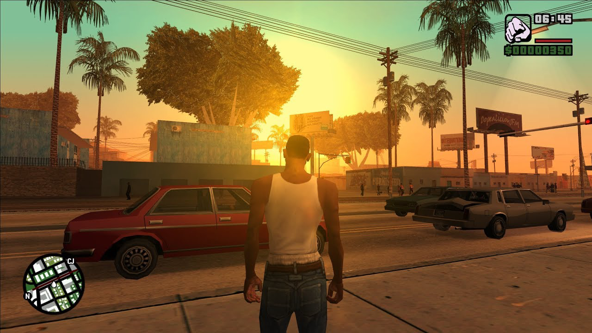

GTA San Andreas
Grand Theft Auto: San Andreas é um jogo eletrônico de ação-aventura desenvolvido pela Rockstar North e publicado pela Rockstar Games. É o quinto título principal da série Grand Theft Auto e foi lançado em outubro de 2004 para PlayStation 2 e em junho de 2005 para Xbox e Microsoft Windows. Versões para plataformas móveis foram lançadas inicialmente em 2013, enquanto que uma versão aprimorada, sob o subtítulo The Definitive Edition, foi lançada em 2021. O jogo se passa no estado ficcional de San Andreas, com a história seguindo Carl "CJ" Johnson em sua luta para lidar com guerras de gangues, confrontos com policiais e as relações com sua família e amigos. O mundo aberto permite que os jogadores naveguem livremente pelas áreas rurais e urbanas de San Andreas.
A jogabilidade é mostrada em uma perspectiva de terceira pessoa e o mundo pode ser atravessado a pé ou com veículos. Os jogadores controlam Carl Johnson, com muitas missões envolvendo tiro e direção. Ao contrário de seus antecessores, San Andreas introduz elementos de jogabilidade que foram incorporados em jogos posteriores, incluindo elementos de RPG, opções de personalização de roupas e veículos, e uma vasta gama de atividades e minijogos. Seu enredo foi baseado em vários eventos reais que ocorreram em Los Angeles, incluindo a rivalidade entre as gangues de rua Bloods e Crips, a epidemia do tráfico de crack, o Escândalo Rampart do Departamento de Polícia de Los Angeles e também os distúrbios de Los Angeles em 1992. A equipe de desenvolvimento realizou grandes pesquisas com o objetivo de reproduzir as diferentes cidades dentro do jogo.
Sinopse
Os eventos de San Andreas acontecem em 1992 no estado fictício de San Andreas, nos Estados Unidos — com base no retrato do início dos anos 1990 dos estados da Califórnia e Nevada — que consiste em três cidades principais: Los Santos (baseada em Los Angeles), San Fierro (com base em São Francisco) e Las Venturas (baseada em Las Vegas). Várias regiões de floresta, deserto e pequenas cidades rurais estão espalhadas entre as grandes cidades. Los Santos é circundada pela região rural de Red County, enquanto que San Fierro tem seu arredores compostos pela região florestal e montanhosa de Flint County e Whetstone. Las Venturas faz fronteira com a região desértica de Bone County — onde fica localizada a zona restrita Area 69 (inspirada na base militar Área 51 da Força Aérea dos Estados Unidos, em Nevada) — que faz divisa com o condado de Tierra Robada. Liberty City, a cidade apresentada em Grand Theft Auto III que é baseada levemente na cidade de Nova Iorque, também faz uma pequena aparição no jogo.
O mundo de San Andreas faz parte do cânone "Universo 3D" da série Grand Theft Auto, embora, ao contrário de seus antecessores que estão definidos nesta continuidade, o jogo incorpore versões fictícias de marcos e ambientes da vida real das cidades e estados dos Estados Unidos. Seu mapa permaneceu por quase uma década como o maior da série, até ser superado pela representação de Los Santos de Grand Theft Auto V.